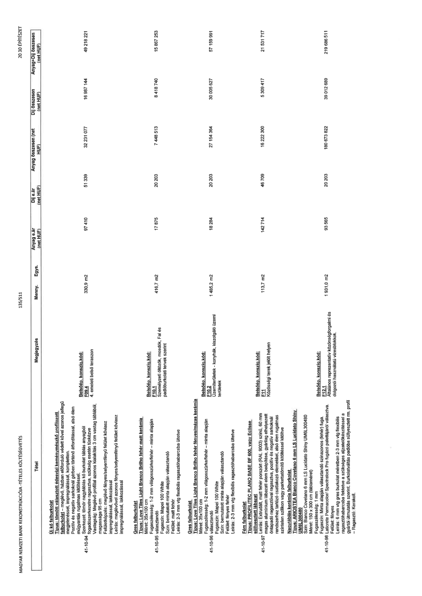

| Tétel | Megjegyzés | Menny. | Egys. | Anyag e.ár (net HUF) | Díj e.ár (net HUF) | Anyag összesen (net HUF) | Díj összesen (net HUF) | Anyag+Díj összesen (net HUF) |
|---|---|---|---|---|---|---|---|---|
| 41-10-94 Új kő falburkolat Típus: tömött választott édesvízi keménymészkő profilozott falburkolat - meglévő, házban előforduló védett kővel azonos jellegű megjelenéssel, impregnálással, kompletten. Pozitív és negatív sarkoknál gérben történő átfordítással, alsó élen műgyantás rugalmas kitöltéssel. Szerkezet, tömör nagytáblás kő burkolat táblás anyagból fogadószerkezetre ragasztva, szükség esetén tüskézve Vastagság: Meglévő profillal azonos kialakítás 3 cm vastag táblából, magassága 95 cm Felületképzés: meglévő fényes/selyemfényű felület kőviasz impregnálással, lakkozással Leírás: meglévővel azonos fényes/selyemfényű felület kőviasz impregnálással, lakkozással | Belsőép. konszig.kód: F09.4 4. emeleti belső teraszon | 330,9 | m2 | 97 410 | 51 339 | 32 231 077 | 16 987 144 | 49 218 221 |
| 41-10-95 Gres falburkolat Típus: Love Tiles Light Branco Brilho fehér matt kerámia Méret: 35x100 cm Fugaszélesség: 1-2 mm világosszürke/fehér – minta alapján választandó Fugaszín: Mapei 100 White Szín: bemutatott minta alapján választandó Felület: matt fehér Leírás: 2-3 mm vtg flexibilis ragasztóhabarcsba ültetve | Belsőép. konszig.kód: F10.1 Személyzeti öltözők, mosdók, Fal és padlóburkolati tervek szerint. | 416,7 | m2 | 17 875 | 20 203 | 7 448 513 | 8 418 740 | 15 867 253 |
| 41-10-96 Gres falburkolat Típus: Love Tiles Light Branco Brilho fehér fényes/mázas kerámia Méret: 35x100 cm Fugaszélesség: 1-2 mm világosszürke/fehér – minta alapján választandó Fugaszín: Mapei 100 White Szín: bemutatott minta alapján választandó Felület: fényes fehér Leírás: 2-3 mm vtg flexibilis ragasztóhabarcsba ültetve | Belsőép. konszig.kód: F10.2 Üzemterületek - konyhák, kiszolgáló üzemi területek | 1 485,2 | m2 | 18 284 | 20 203 | 27 154 364 | 30 005 627 | 57 159 991 |
| 41-10-97 Fém falburkolat Típus: PROFILITEC PLANO BASE BF 600, vagy Eclisse süllyesztett lábazat Leírás: Extrudált, matt fehér porszórt (RAL 9003) színű, 60 mm magas alumínium lábazati elem beépítése, gyárilag elhelyezett öntapadó ragasztóval ragasztva, pozitív és negatív sarkoknál rendszerhez tartozó elemekkel, alsó élen rugalmas színtelen szilikon vagy parkettatömítő kitöltéssel kitöltve | Belsőép. konszig.kód: F11 Közösségi terek jelölt helyein | 113,7 | m2 | 142 714 | 46 709 | 16 222 300 | 5 309 417 | 21 531 717 |
| 41-10-98 Nagytáblás kerámia falburkolat Típus: ARIOSTEA Bianco Covelano 6 mm LS Lucidato Shiny UM6L300480 Méret: 150 x 300 cm (táblaméret) Fugaszélesség: 1 mm Fugaszín: Minta alapján választandó színazonos (fehér) fuga, Laticrete Permacolor/SpectraLock Pro fugázó palettájáról választva. Felület: fényes Leírás: 6 mm vtg gres burkolat méretben 2-3 mm vtg flexibilis ragasztóhabarcsba fektetve a szükséges aljzatelőkészítéssel a gyártói útmutatás szerint. Burkolatváltás padlóba süllyesztett rm. profil - Ragasztó: Kerakoll. | Belsőép. konszig.kód: F12.1 Általános reprezentatív közönségforgalmi és dolgozói használatú vizesblokkok. | 1 931,0 | m2 | 93 565 | 20 203 | 180 673 822 | 39 012 689 | 219 686 511 |
